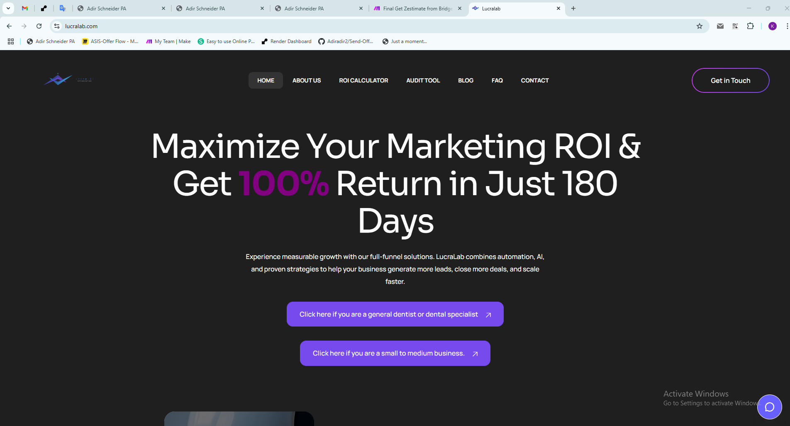
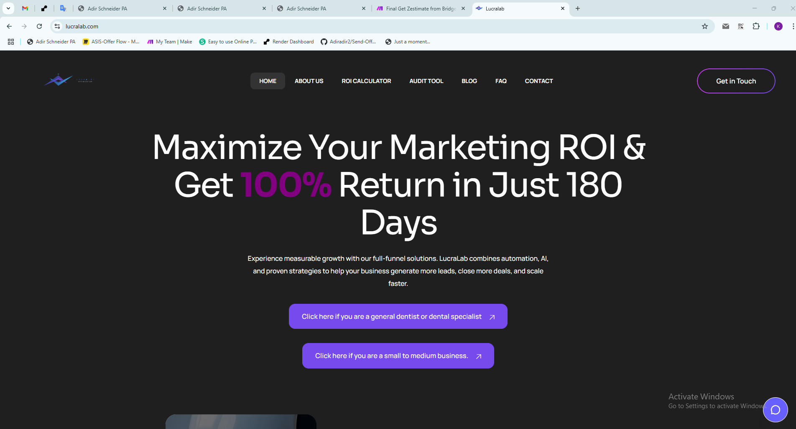
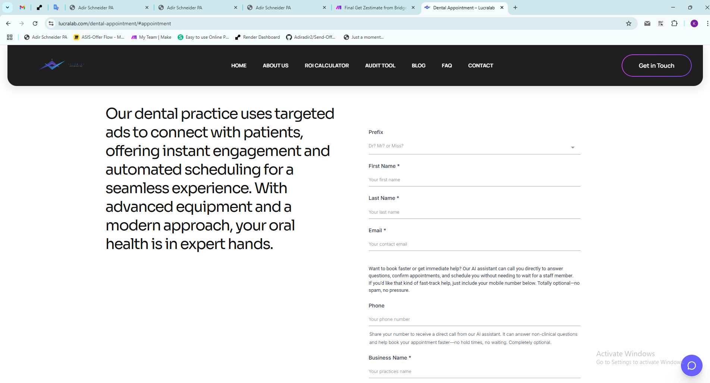
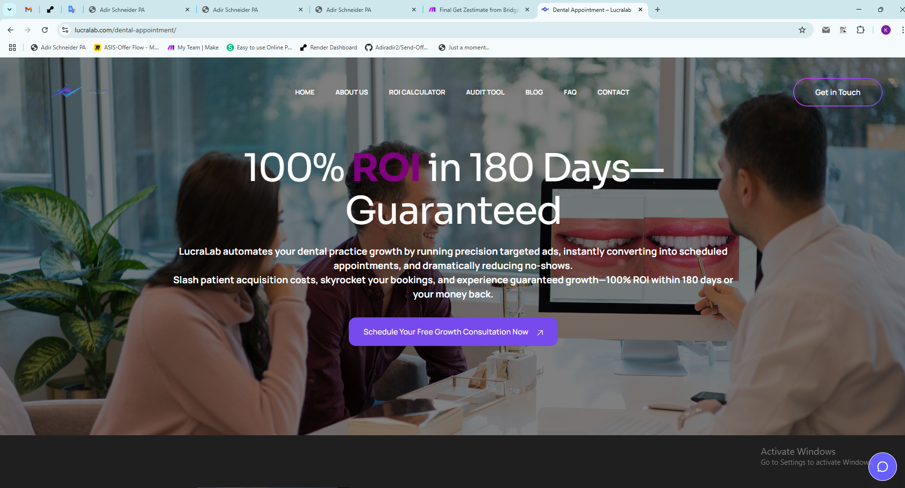
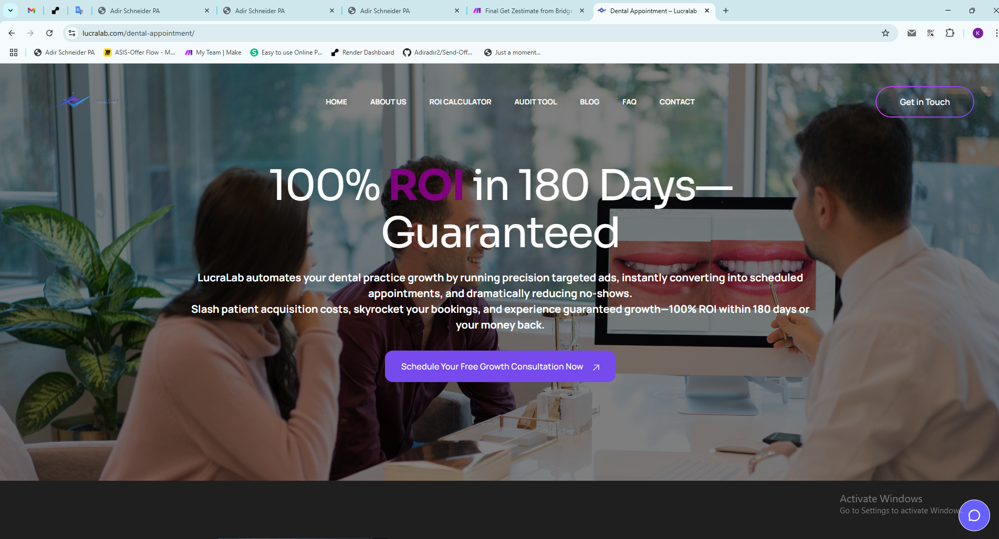

1. What I Built
I developed a full automation system for Lucralab — an AI-powered agent that calls leads after form submission, qualifies interest, and books appointments via synced calendar. The system integrates GHL, Make.com, Synthflow AI, OpenAI, and calendar tools to handle:
- 📞 AI voice calls with response handling
- 📅 Automatic appointment scheduling with James
- 📊 Lead scoring, tagging, and workflow segmentation
- 🔁 Nurture & reminder flows via SMS + email
- 📈 Increased ROI for dental clinics & SMBs
2. System Snapshots
1. Homepage & Lead Submission
 

2. AI Voice Call Trigger & Detection


3. Synthflow AI Response Logic


4. Appointment Booking


5. Lead Nurturing & Follow-Up


6. Dashboard & Conversation Tracking
 

🚀 Business Benefits
- ✅ Converts leads into bookings without staff involvement
- 📉 Reduces no-shows with automated reminders
- 📈 100% ROI within 180 days (Lucralab promise)
- 🎯 Works for general dental and SMB lead generation
- 📡 Easily scalable with AI-powered engagement